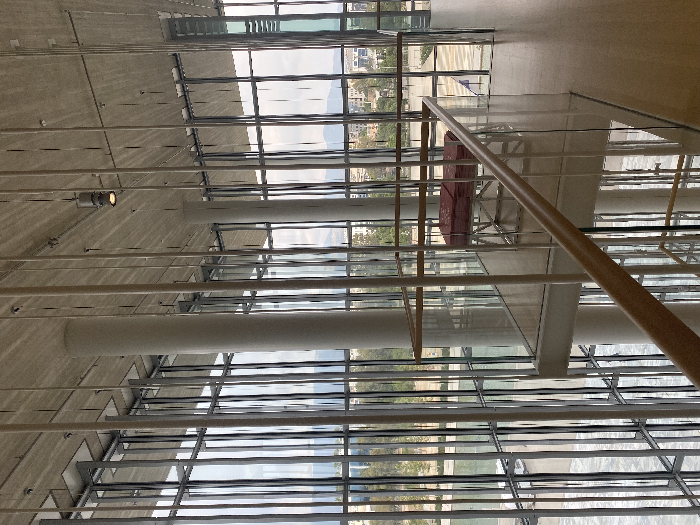
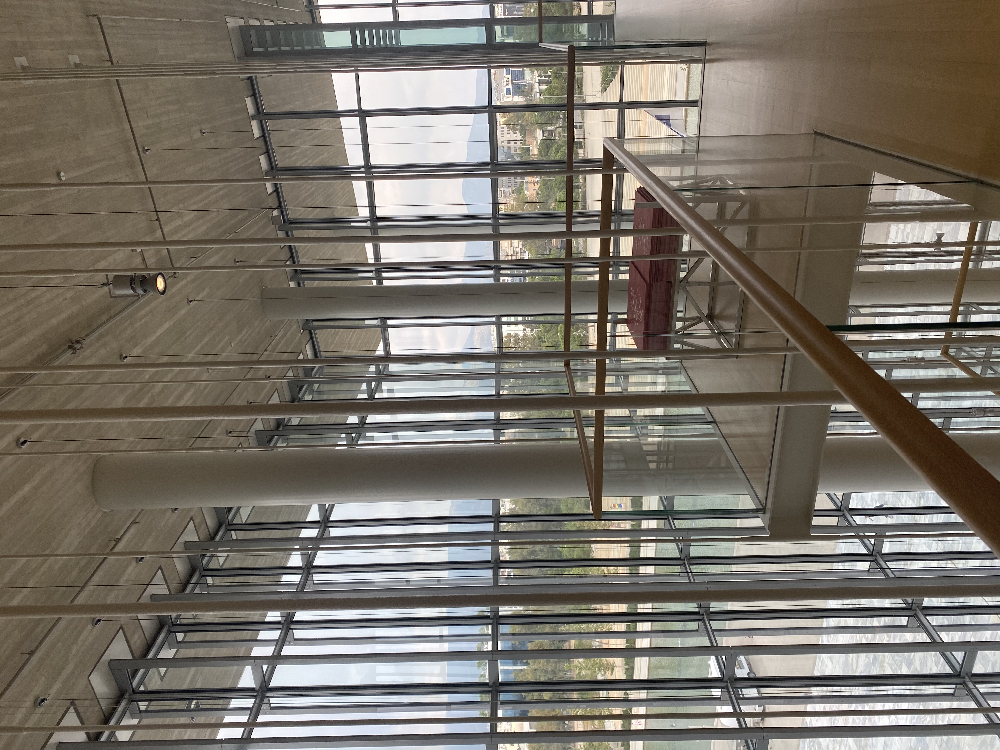

Hello! I'm Haseena, a passionate first-year Master of Architecture student at Carleton University. With a love for creative problem-solving and an eye for design detail, I’m dedicated to exploring the intersections of architecture, sustainability, and urban landscapes. My academic journey is driven by a commitment to understanding how thoughtful architecture can shape not only the built environment but also the way people interact with spaces. This portfolio showcases a collection of my projects, ideas, and explorations in architectural design. From studying the revitalization of urban waterfronts to reimagining post-industrial spaces, my work reflects my interest in sustainable design principles, community-driven architecture, and innovative structural systems. Feel free to explore the assignments below, where you'll find a blend of conceptual design, technical drawings, and reflections on how each project connects to larger architectural themes. I’m excited to share my journey and hope these works inspire new ways of thinking about the future of architecture..
Feel free to explore my assignments below!
My Assignments
Curriculum Vitae
Download CVContact Me
Email Me LinkedInArchitecture Travels

 

Architectural Model Making